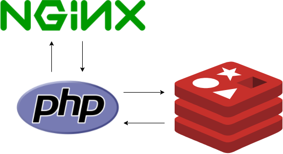

name: inverse layout: true class: center, middle, inverse --- # Using Nginx + embedded LUA <br> for performance demanding stuff ## Presented by Onni Hakala .footnote[] --- layout: false <img height="50" src="Nginx_logo.svg.png"> Nginx is a web server, which can also be used as a reverse proxy, load balancer and HTTP cache. It's typically used in every modern stack at least for proxying and SSL-termination. Today we will see that it can be used as an application server too. .footnote[] --- ## Openresty OpenResty® is a full-fledged web platform that integrates the standard: * Nginx core * LuaJIT * many carefully written Lua libraries * lots of high quality 3rd-party Nginx modules * and most of their external dependencies. [https://openresty.org/en/](https://openresty.org/en/) --- ## Openresty Openresty is useful for writing small really demanding parts of your application in web server level. This eliminates the tcp delay to the application backend and as we can see LUA is pretty damn fast. .footnote[] --- ## Example App Our example application is basic HTTP Service to access, save and delete data from Redis.  --- name: inverse layout: true class: center, middle, inverse --- # Demo time [github.com/onnimonni/nginx-lua-redis-demo](github.com/onnimonni/nginx-lua-redis-demo) --- # Thanks for listening! Come talk to me: Twitter: [@koodimonni](twitter.com/koodimonni) Github: [@onnimonni](github.com/onnimonni) .footnote[]